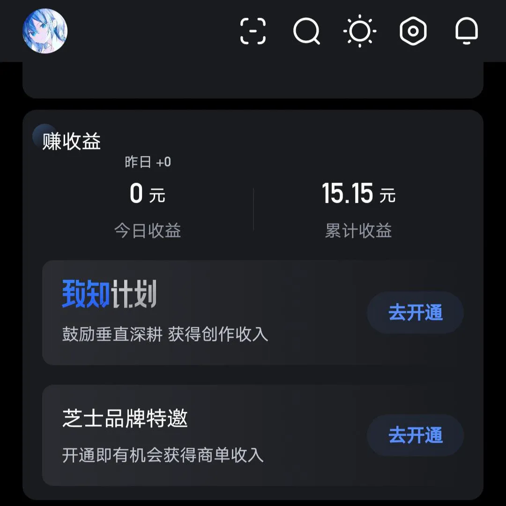

日寄（2024-01-11，Anlin，知乎）
本文最后更新于：2024年1月12日 下午
作者：Anlin
链接：https://zhuanlan.zhihu.com/p/677326021
来源：知乎
被裁了。
接到通知书的那一刻，没有想象中的激动和喜悦，
更多的，还是一种水到渠成之后，如释重负的平静，
一直以来的拼搏和汗水，在这一刻终于开花结果，
星光不负赶路人，时光不负有心人，
但行好事，莫问前程，一切都有最好的安排。
前面这段是两年前准备的考研上岸文案，一直没机会发来着。
早上被闹钟吵醒，又工作日，这鬼日子什么时候是个头，
朋友发消息问我被裁了没，
我说不道啊，没听说啊，借你吉言吧，
真借到了，
到公司就被叫进了会议室，投影开着视频会议，领导们一些在墙上，一些在桌子上，很正式。
鬼日子这就到头了，
这一定就是念念不忘必有回响，
问朋友怎么知道裁员消息的，
他说这几天好几个技术交流群，很邪门，居然开始聊技术了。
有个很经典的问题
“如果唐僧的取经团队要裁掉一个人，应该裁谁“，
小时候总是和朋友吵得不可开交，
现在懂了，
发个招聘启事，朝廷项目，一把手重点关注，填补国内空白领域，500年资深技术员牵头，团队内有师徒机制，结项全员给大唐天庭双编制，
以拿不动金箍棒无法胜任工作为由开掉，哪有指标下来直接砍骨干的。
以为会失眠，
毕竟吃了大半年褪黑素，
没想到睡了半年来最安稳的一觉。
原来人并不会像玻璃一样“bulingbuling”脆脆地碎掉，
它更类似于锈蚀、腐烂、低温烫伤，
温和地、毫无痛楚地，越来越麻木，越来越迟钝，
直到某一天，再也说不出“我到了一百岁还可爱”这种话。
不知道怎么回事关注了个40多的阿姨，每天点开就看到她发读书笔记人生感悟，
没什么共同话题，
她平常看《鬼谷子的心理学》《王阳明的人生哲理》，我比较爱看斗破苍穹之什么什么的，
她打算下个周天出门，因为天气预报说是晴天，
她在要不要涂口红这件事上纠结了一个星期，
她说这管口红买来还没涂过，
最后一天晚上，她很正式地决定要涂口红，给自己打气，句子后面全是感叹号。
所有人都会老的，
“春风若有怜花意，可否许我再少年“这样的诗句，只有少年念出来才意气风发。
晚上不用加班，
虽然不知道心里到底什么感觉，但打算先吃顿烧烤，这玩意好，开心不开心都适合吃，
楼下有家烧烤店，
好吃，但很脏，在日本能拍好几集纪录片的那种，
有天白天路过，看到在大扫除，黑黄黑黄一层一层往下冲，看着特舒服，
当天晚上立马点了一大把回家，
没内味了。
看评论有大哥说我一定在知乎赚了很多钱吧，
我寻思有道理啊，
激动地混身颤抖，
心想难道不知不觉间我已经财富自由了？

啊没事了，要手动开的，
15.15是回了一个值乎来的，当时看收到的问题没什么资格回答，纯打赏拿着受之有愧，索性关了就。
后来才知道17块太贵了，还好也没收多少。
虽说知识付费的精髓就在于，不买超过经济能力的课就觉得没用，
但还是算了。
翻了翻之前的日寄，真羡慕，想不明白怎么写出来的，
我妈说，你试试能不能养活自己吧，能的话随你，
于是我开始按能养活自己的标准打工，才发现，为生活奔波的时候，没精力和大爷聊天，也没心情抬头看朝霞日落，连电梯上升的加速度都压得人腿软。